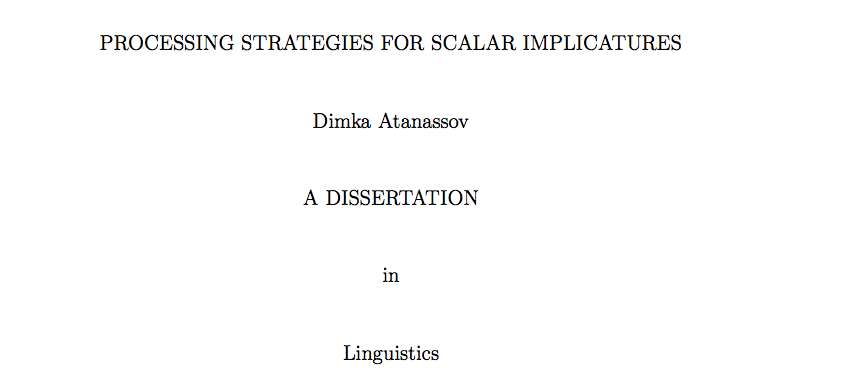
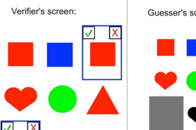

PhD Thesis, Dimka Atanassov (2014)
Original dissertation research, using eye-tracking and in lab experimental methods in order to investigate how people comprehend spoken language. Published in ProQuest
Research Paper. Dimka Atanassov, Florian Schwarz, John Trueswell (2012)
Original research paper. Published in the Proceedings of the 36th Annual Penn Linguistics Colloquium. Penn Working Papers in Linguistics, Vol. 19.1, ed. Kobey Shwayder. Philadelphia, PA
Presentation based on original research. Christine Boylan, Dimka Atanassov, Florian Schwarz, John Trueswell (2011). Talk presented at XPRAG 2011, Barcelona, Spain, June 2-4-
Analyzed pricing data (from Zillow) and Crime Data (from the San Francisco open data) to create a prediction model and visualizations of house pricing in San Francisco. I used Python for the data analysis and visualizations, and deployed the website on Heroku using Flask. Click here for the live website.